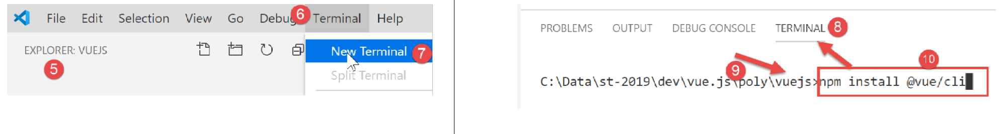
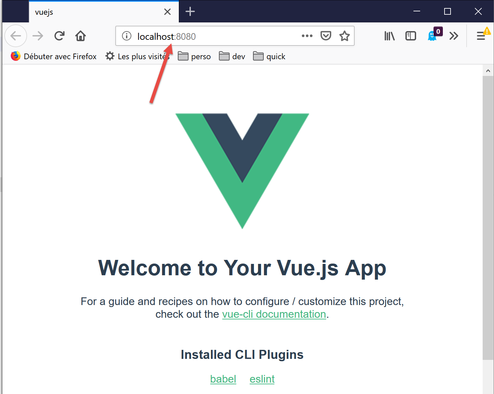

2. Criação de um ambiente de trabalho
Retomamos o ambiente de trabalho detalhado no documento [2]:
- Visual Studio Code (VSCode) para escrever os códigos JavaScript;
- [node.js] para os executar;
- [npm] para descarregar e instalar as bibliotecas JavaScript de que vamos precisar;
Criamos um ambiente de trabalho no [VSCode]:

- no [1-5], abrimos uma pasta [vuejs] vazia no [VSCode];

- em [8-10], instalamos a dependência [@vue/cli], que nos permitirá inicializar um projeto [vue.js]. Esta dependência traz consigo um grande número de pacotes (várias centenas);
No mesmo terminal, digita-se em seguida o comando [vue create .], que solicita a criação de um projeto [vue.js] na pasta atual (.) :

- no [13], inicia-se uma série de perguntas que servem para configurar o projeto;

- assim que todas as perguntas forem respondidas, são descarregados novos pacotes e é gerado um projeto na pasta atual, [14].
Vamos ver o que foi gerado. O ficheiro [package.json] é o seguinte:
{
"name": "vuejs",
"version": "0.1.0",
"private": true,
"scripts": {
"serve": "vue-cli-service serve vuejs-20/main.js",
"build": "vue-cli-service build vuejs-20/main.js",
"lint": "vue-cli-service lint"
},
"dependencies": {
"axios": "^0.19.0",
"bootstrap": "^4.3.1",
"bootstrap-vue": "^2.0.2",
"core-js": "^2.6.5",
"vue": "^2.6.10",
"vue-router": "^3.1.3",
"vuex": "^3.1.1"
},
"devDependencies": {
"@vue/cli-plugin-babel": "^3.11.0",
"@vue/cli-plugin-eslint": "^3.11.0",
"@vue/cli-service": "^3.11.0",
"babel-eslint": "^10.0.1",
"eslint": "^5.16.0",
"eslint-plugin-vue": "^5.0.0",
"vue-template-compiler": "^2.6.10"
},
"eslintConfig": {
"root": true,
"env": {
"node": true
},
"extends": [
"plugin:vue/essential",
"eslint:recommended"
],
"rules": {},
"parserOptions": {
"parser": "babel-eslint"
}
},
"postcss": {
"plugins": {
"autoprefixer": {}
}
},
"browserslist": [
"> 1%",
"last 2 versions"
]
}
Comentários
- linhas 14-22: nas dependências necessárias para o desenvolvimento, observam-se referências às duas ferramentas [eslint, babel] já utilizadas nos dois capítulos anteriores. A estas juntam-se plugins destas duas ferramentas destinados à sua utilização no âmbito do [vue.js];
- linha 34: é o pacote [babel-eslint] que irá realizar a transpilagem de ES6 para ES5 dos códigos jS;
- linhas 5-9: foram criadas três tarefas [npm]:
- [build]: serve para construir a versão compilada do projeto, pronta para entrar em produção;
- [serve]: executa o projeto num servidor web. É com esta ferramenta que são realizados os testes durante o desenvolvimento. Tal como acontece com o [webpack-dev-server], uma alteração no código-fonte do projeto provoca automaticamente a recompilação do projeto e o seu recarregamento pelo servidor web;
- [lint]: serve para analisar os códigos jS e gerar relatórios. Não utilizaremos esta ferramenta aqui;
Foi gerado um ficheiro [README.md] com o seguinte conteúdo:
Este ficheiro resume os comandos a utilizar para gerir o projeto.
Sabemos que, no [VSCode], as tarefas [npm] são propostas para execução:

- no [1-3], executamos o comando [serve], que irá compilar e, em seguida, executar o projeto [4-5];
Ao executar o URL e o [http://localhost:8080], obtemos a seguinte página:

Explicaremos um pouco mais adiante o que levou a esta página.
Vamos continuar a configurar o nosso ambiente de trabalho:

- No [2] acima, vemos os indicadores [git]. O [git] é um gestor de código-fonte que permite gerir versões sucessivas do mesmo e partilhá-las entre programadores. Vamos desativar esta ferramenta para o projeto;
- em [3-5], vamos às propriedades do projeto;

- no [9-10], desativamos a utilização do [git] no projeto;
Vamos escrever vários testes para demonstrar o funcionamento do [vue.js]. No entanto, não queremos criar um novo projeto de cada vez, pois isso implicaria gerar sempre uma pasta [node_modules], que ocupa várias centenas de megabytes. Voltemos às tarefas [npm] do ficheiro [package.json]:
"scripts": {
"serve": "vue-cli-service serve vuejs-00/main.js",
"build": "vue-cli-service build vuejs-00/main.js",
"lint": "vue-cli-service lint"
},
- linha 2: o comando [serve] utiliza, por predefinição:
- o ficheiro [public/index.html];
- associado ao ficheiro [src/main.js];
Na linha 2, é possível especificar no comando [serve] o ponto de entrada do projeto, por exemplo:
"serve": "vue-cli-service serve vuejs-00/main.js",
Vamos experimentar:

- no [1], a pasta [src] foi renomeada para [vuejs-00];
- em [2-3], o comando [serve] foi alterado;
- em [4-6], executa-se o projeto;
Obtém-se o mesmo resultado que anteriormente:

Para os nossos testes, procederemos, portanto, da seguinte forma:
- escrever código numa pasta [vuejs-xx] do projeto;
- teste deste projeto com o comando [vue-cli-service serve vuejs-xx/main.js] no ficheiro [package.json];
Quando o servidor de desenvolvimento é iniciado, qualquer alteração num dos ficheiros do projeto provoca uma recompilação. Por este motivo, desativamos o modo [Auto Save] do [VSCode]. Com efeito, não queremos que haja recompilação sempre que se introduzam caracteres num dos ficheiros do projeto. Só queremos que a recompilação ocorra em determinados momentos:

- no [2], a opção [Auto Save] não deve estar marcada;